Modern Motherfucking Code Editor
This is Hex: It opens, you write code, and it gets the fuck out of your way.
That's the entire fucking point. A native code editor, a proper terminal, a place for your agents, and the tools around them. No Electron. No Chromium in a trench coat. No account to open a text file. No shaming you by denying access to first-party extensions.
Hex is a work in progress. More features are always on the way :)

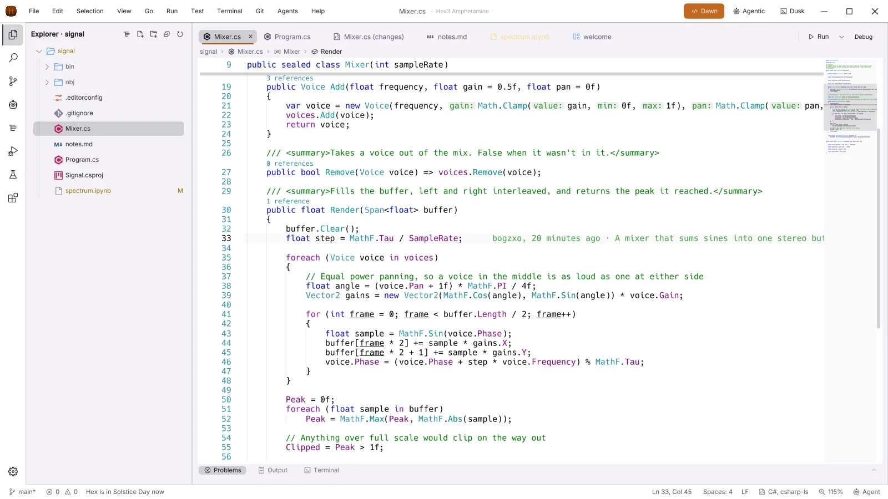
Dawn, the editor. The colours, the hints, the reference counts and the blame are csharp-ls and git talking, not a mockup. It follows your system the way Hex's own Solstice and Solstice Day do.
- 56 mswoken from sleep
- 381 mseditor window, cold start
- 50.6 MiBzipped, all three faces
- 0browsers shipped inside
Measured, not vibes
Fast as fuck, with receipts
Fresh measurements of Hex 3.3.0 Amphetamine, the same native build you download, taken on one ordinary Windows machine, how they were taken is folded under the numbers.
Process start to the first rendered scene, medians, the editor opening an empty folder and the terminal one shell. Opening Hex's own source with a C# file up instead, the editor's first frame comes at 660 ms (571–693), its window up at 381.
Persistent Process. Closed isn't gone.
Persistent Process keeps Hex asleep in the background once its last window is closed, the window context and a minimally loaded engine are kept while the threads remain frozen, awaiting an open request, so opening it again is a wake rather than a launch. It's off by default, the switch is in Getting started on the welcome page.
- 5 MiBof RAM in use while it sleeps
- 0.08%of one core, 16 ms of CPU in 20 s asleep
- 6.5×sooner on screen woken than launched
Start to the window on screen, the same build both ways, 7 cold launches and 36 wakes, medians. Asleep, Hex keeps 296 MiB of private memory committed so it can wake without loading anything again, regardless, Windows pages nearly all of it out to disk, and the 5 MiB is what actually stays in RAM.
And the rest
- <1 sto a C# file's first errors
- 0cores csharp-ls keeps busy doing nothing
- 33 msto open the first Dusk of a run from Dawn
- 11–18 MB/sof output through a terminal pane
- 0blank frames switching between Dawn, Agentic and Dusk
- 6.1%of a core for Agentic standing still with a dozen long chats
Every measurement, and how they were taken
Fresh measurements of Hex 3.3.0 Amphetamine: Release, Windows x64, NativeAOT, self-contained, published the way the download is. Taken on 21 November 2026 on Windows 11, a Ryzen 5 5600X, an RTX 3060 and 32 GB of RAM. Six launches of each face after one that's thrown away, because the first one fills the shader caches.
| Measurement | Dawn, the editor | Dusk, the terminal |
|---|---|---|
| Process start to first rendered scene, median | 660 ms | 405 ms |
| First-frame range, 6 launches each | 571–693 ms | 394–479 ms |
| Process start to window shown, median | 381 ms | 333 ms |
| Working set, 30 s after the first frame, median | 253.8 MiB | 152.6 MiB |
| Private memory, 30 s after the first frame, median | 349.7 MiB | 247.2 MiB |
| CPU at rest, median, of one logical core | 2.09% | 0.39% |
First frame means first frame; it doesn't mean every language server has finished indexing. Memory and CPU cover Hex itself, not child shells or language servers, sampled for 10 s once it had sat for 30. This is one machine, and a busy one, with other agents at work on it. It's not a race rigged against somebody else's editor. The C# errors, csharp-ls, the first Dusk, terminal output and the blank frames were measured as each change went in; Agentic standing still is the median of three runs of its self test (3.8–22.1%). Method and reproduction commands.
A game engine underneath. Seriously.
Hex is C# compiled ahead of time to native code. No JIT warming up while you stare at a splash screen. The Horizon engine draws the interface through Vulkan, with rendering on its own thread. On macOS, MoltenVK bridges that to Metal.
There's no DOM to lay out, no browser to haul around, and no reason a text editor should need either.
// Hex.exe, start to first frame
main 14 ms
editor made 226 ms
device made 368 ms
window shown 388 ms
scene set up 678 ms
first frame of the scene 680 msUnedited, 1600 × 900
Look at the bloody thing
Every picture is the real Hex window, most of them 3.3.0 with a small sample project open. An agent took them, driving Hex through its own MCP server. Open any screenshot for a closer look.

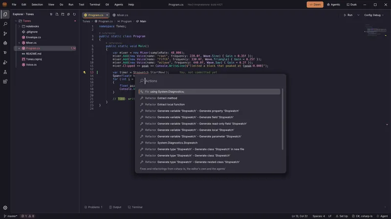

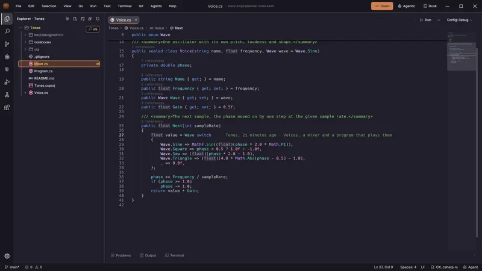

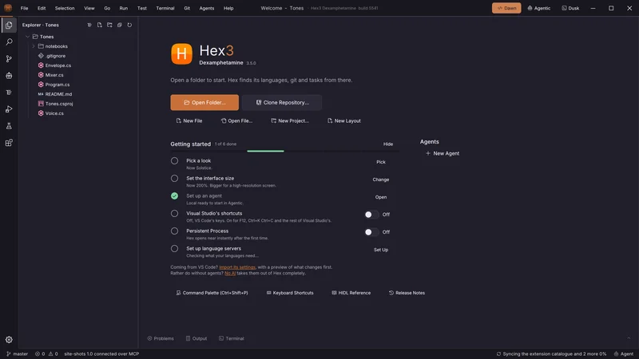

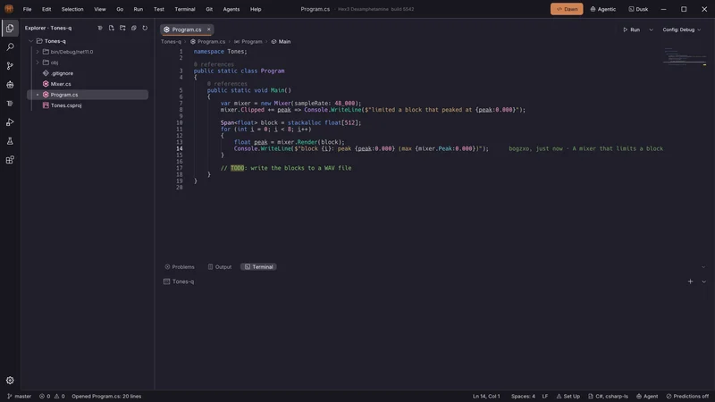

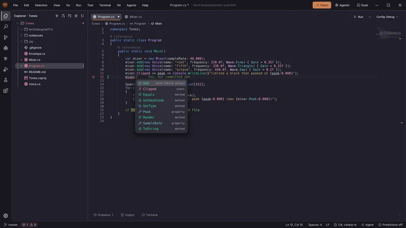

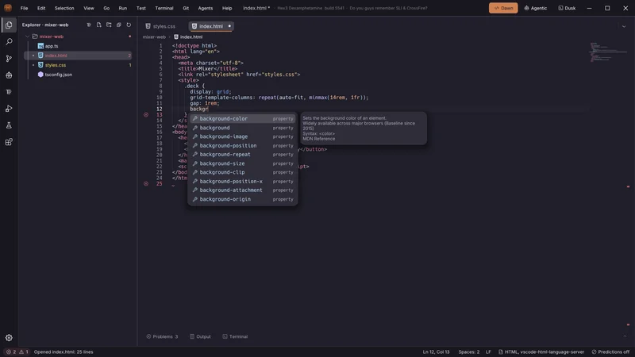
<style>.
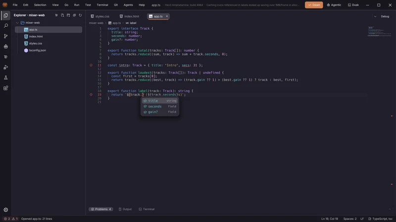

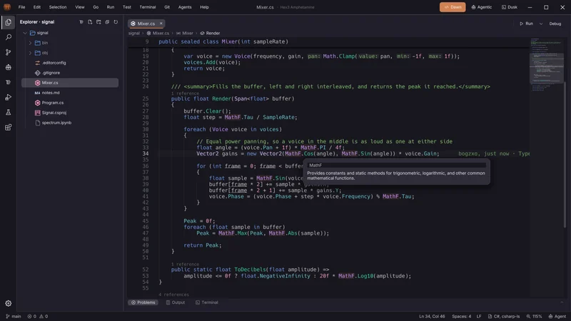

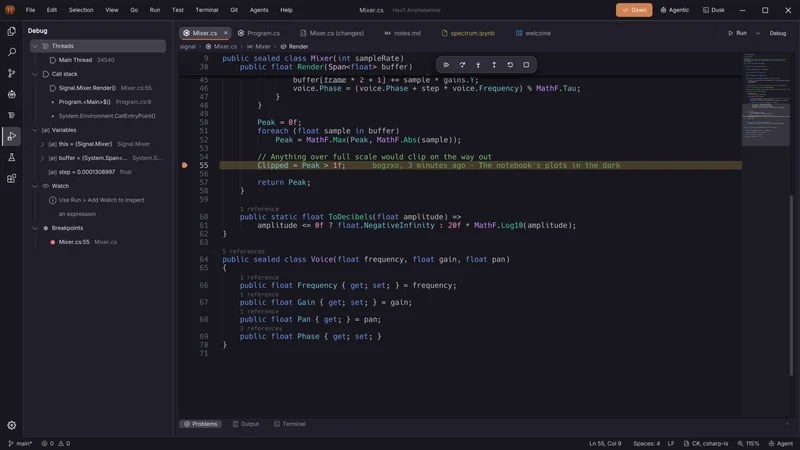


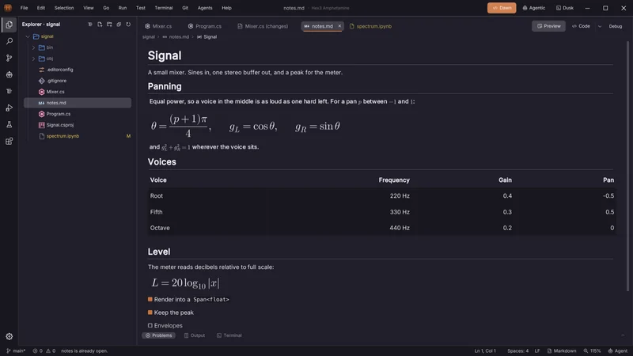

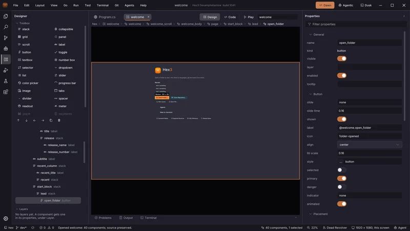

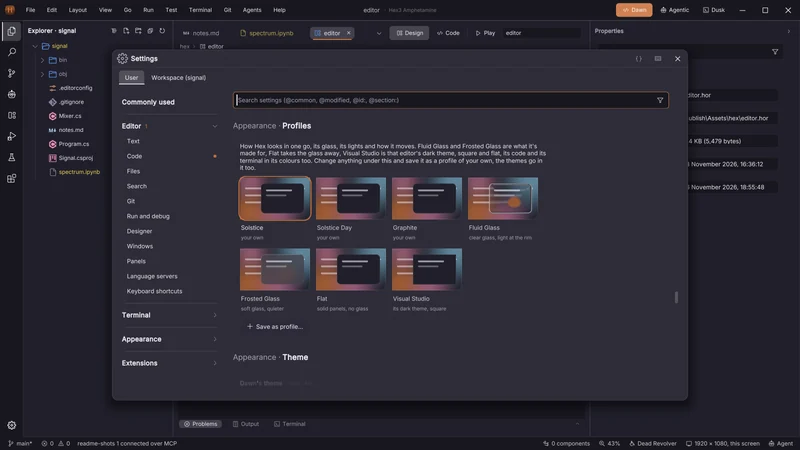
Dawn, the editor
Lightweight doesn't mean “does fuck all”
-
Code
Language-server completion, hovers, definitions, references, rename, inlay hints, reference counts and semantic highlighting.
More about Code
Folding, sticky scroll, minimap, peek, pinned tabs, format on save and
.editorconfig. Eighteen language servers come declared, C# to Rust, the web among them. C# is checked by the compiler alone unless you switch its analyzers on, so a file's first errors come in under a second, not half a minute. -
Ctrl+. and it's sorted
One menu of everything that can be done to the line or the selection.
More about Ctrl+. and it's sorted
The language server's fixes come first, the one it would pick on top, then its refactorings and the editor's own rename, format and organise imports. Or hand the line to an agent to fix the problem, fill in a TODO or explain the code. A lightbulb in the gutter says there's a fix before you ask.
-
An explorer you work in
Type to find a file.
More about An explorer you work in
New File and Rename name it right on its row, and Esc takes it back. Drag to move, hold Ctrl to copy. Open files are marked, a folder carries a dot for a change or a problem somewhere under it, and a chain of single folders is one row.
-
Git
Gutter changes, stage and revert, inline blame, commits, branches, stash, history, diffs and merge-conflict controls.
More about Git
Keep the context next to the code instead of juggling windows to find out what you changed.
-
Find your shit
Quick Open, a command palette of over 350 commands, workspace search and replace, searchable settings and configurable keybindings with conflict reporting.
More about Find your shit
Import VS Code settings instead of rebuilding your preferences by hand.
-
Run, debug and test
Workspace tasks, a Test Explorer and a debugger with breakpoints, conditions, stepping and watches.
More about Run, debug and test
.NET through netcoredbg, which Hex fetches the first time you press F5; Python through debugpy; D, C and C++ through lldb-dap.
-
Notebooks for engineers
Jupyter notebooks with real kernels, typeset maths and plots.
More about Notebooks for engineers
Each cell says what it's doing: a run count, when it last ran, queued or running with the seconds going, and an error with a button to the line that failed. Long output folds. Kernels are separate tools, not secretly bundled into the download number.
-
Build interfaces
A live layout designer for Horizon and HIDL, component properties, and evaluated HIDL values beside the source.
More about Build interfaces
Extensions are small HIDL scripts, with a catalogue inside Hex.
-
Usable by everyone
Everything you can focus shows a focus ring, and Tab goes through the whole window.
More about Usable by everyone
Links, dim text and the accent's text meet 4.5:1 contrast in every look. Settings fit the screen at 200%, and UI animation at 0 means nothing moves. The welcome page is a checklist of six that ticks itself off.
Dusk, the terminal
Dusk. A whole fucking terminal.
Tabs, split panes, shell profiles, search, scrollback and a drop-down mode. ConPTY on Windows, a PTY on Linux and macOS. Run it on its own with Hex --dusk, use the terminal panel inside Dawn, or switch faces from the title bar with Ctrl+Alt+Shift+D. The editor stays where you left it.
Dusk says when a shell ended and with what. A shell that failed keeps its pane, so you can read why. Tabs show busy, rung and failed, and find floats over the pane. Going between Dawn, Agentic and Dusk never flashes: a face warms up as you point at its button and a short crossfade carries you over. The first Dusk of a run opens in about 30 ms, not over a second.

PowerShell running a small showcase script: actual files, actual Git history, ANSI colors.
Agentic, the agents' face
Bring your own agent. Or don't.
Hex doesn't sell you an AI subscription. Agentic runs your installed Claude Code, Codex or Antigravity CLI, with your own account. A fleet of chats side by side, each card saying its model, tokens, cost and how full its context is. Your provider's usage charges still belong to your provider.
No AI, one switch
None of it. Not even loaded.
No AI in Settings, or Hex --no-ai, takes the agents out at the root instead of hiding them: Agentic, the agent extensions, their commands and their MCP tools are never loaded, and the first frame comes about 310 ms sooner. The editor, terminal and language servers stay as they are.

Claude Code at work on Hex itself, the chat that built this release. The badges say how each agent is doing, what changed and how far its plan has got.


-
The fleet
Every chat is a card: its model, tokens, cost, what it's doing and how full its context is. Finished agents fold into a Finished group a few minutes after they end, so the ones waiting on you stay on top.
-
Agents that start agents
One chat can start others, of any system and model, and they sit under it a step in. Twelve can run at once. It waits for them and reports for all.
-
Stuck? Start it again
hex_agent_restartkills a stuck agent along with whatever it had running and starts it again where it was. A chat whose process outlived its turn says it's still running. -
One method, not the whole bloody file
Over MCP Hex exposes 80 tools: repository maps, symbol search, references, focused code reads, screenshots, editor commands, the debugger, notebooks and terminals.
-
86% that never went near a context window
Writing Hex's README took 54 harness calls that handed back 154,000 characters where grep and whole-file reads would have read 1,077,000.
The harness: answers, not file dumps
An agent's bill on an existing massive codebase is mostly what it reads. Hex keeps a live index of the workspace and answers an agent from it in path:line, so the agent gets the lines it asked about instead of a grep's worth of noise or a 3,000-line file for one method. These are the real tools, and Hex counts the input tokens each one saved in a window of its own.
hex_map- The folders a few levels down, the languages in each and the main types they declare. Where to start in a codebase it's never seen.
hex_symbols- Where a name is declared, ranked: exact first, then by its capitals (
QMfindsQueueMcp). One line a hit. hex_search- Text or a regex across the workspace, ranked and grouped by file, lines cut to the match. In place of grep, rg and Select-String.
hex_refs- Everywhere a name is used, by whole word and outside comments and strings, declarations marked.
hex_skim- What files are without opening them: size, language, the comment they start with and their outline with line numbers.
hex_read- One declaration by its name, a method or a class with its comments, instead of the whole file.
hex_edit- Replace exact text in a file without reading it first, through the editor, so undo and the index keep up.
hex_terminal_run- Run a build or the tests and get the exit code and what it printed, long output cut in the middle.
hex_changes- What moved in the workspace since the last answer, so an agent catches up on a diff rather than reading everything again.
Any MCP client can use them, not only the agents Hex runs. The server is off until you switch it on.
Appearance
Make it look how you want
Hex3 comes in Solstice: flush panes and an accent for each face, orange for Dawn, violet for Dusk, teal for Agentic. Go light with Solstice Day, back to quiet Graphite, float the panels in glass, or make it feel like Visual Studio. In every look, links, dim text and accent text meet 4.5:1 contrast. Keep it calm, make it loud, or switch the effects off. It's your screen, for fuck's sake.


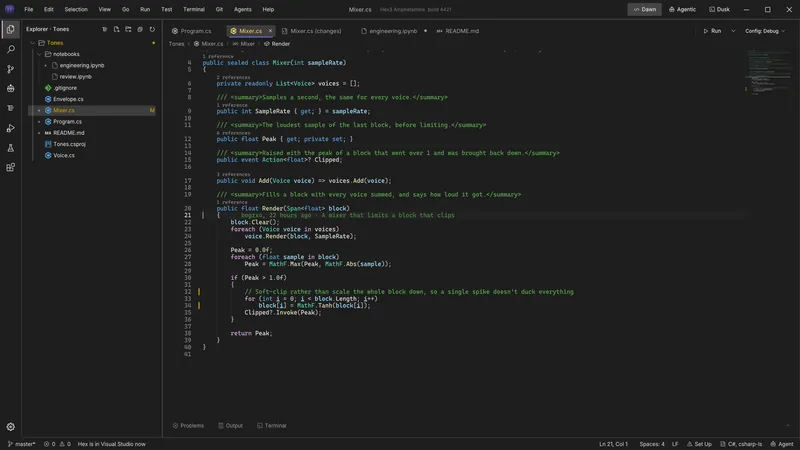
Same code, different mood.
The fine print, in the open
What it doesn't do
It doesn't track you
No built-in telemetry, analytics account or crash-report upload. No sign-in to edit code. It does make network requests for features that need them: update checks, changelogs, extension, debugger and language-server downloads, and the services you choose to use. “No telemetry” isn't a claim that git fetch works by fucking magic.
It doesn't require an installer
The portable archive works too. Hex uses a writable settings folder beside the executable when available, with the platform's application-data folder as a fallback.
Hex 3.1.2 Amphetamine
Get it
Pick your machine. Setup handles installation, shortcuts and updates. Portable is a ZIP you unpack and run. Neither needs a separate .NET installation.
| System | Setup | Portable |
|---|---|---|
| Windows | x64 · ARM64 | x64 · ARM64 |
| Linux | x64 · ARM64 | x64 · ARM64 |
| macOS | Apple silicon · Intel | Apple silicon · Intel |
Windows needs 10 1809 or newer. Linux needs a Vulkan loader and driver. macOS needs 11 or newer; the build is unsigned, so xattr -dr com.apple.quarantine /path/to/Hex if macOS blocks it. All releases · What changed · Installation details
What's new in 3.1.2 Amphetamine
Badges in Agentic, a settings window that finds what you changed, a welcome page that fills the window, and a lot that feels quicker.
Everything in 3.1.2
Agentic
- each agent's card says how it's doing on a badge, Working in blue with a beating dot, Failed in red, a finished chat you haven't seen in the accent
- the tabs' counts are badges, Inbox's in the accent, the Plan's green once every step is done, and the Plan's bar is green the whole way rather than going red at 100%
- Details counts each tool on a badge in the tool's colour
- / commands complete wherever the word is in the box, Tab takes only that word, Enter sends a command written out in full, and a message that starts with a slash is sent as a message
- the list of / commands walks with held arrow keys, Up goes up it rather than closing it, and it scrolls smoothly past its first page
- a picture opened full screen zooms round the pointer and keeps the part you dragged to in sight
- agents can read git's diff of a file and see which files other chats' plans are about to change
the editor
- the settings window has All, Modified and Commonly used under its search, a press each; what sets a setting sits beside what it says, the key shows when you look at a row, and a changed setting has a dot
- the welcome page uses the whole window, three columns on a wide one, with Getting started for the settings nobody finds by looking
- spelling is checked as you type in comments, text, Markdown and page words, never code
- notification cards slide, fade and make room smoothly instead of jumping
- No AI in Settings or
--no-aileaves the agents out altogether
languages
- the Language Servers window sets up each language a step at a time, and says every server is optional, set up only the ones you want
- a notebook's code cells are read by its language's server, so a missing import is underlined
- servers that wait to be asked what's wrong with a file (TypeScript 7's) are asked
From source
Build the bloody thing
Use the SDK in global.json, currently a .NET 11 release candidate. A standalone checkout needs Horizon's development branch as well as Hex's extensions.
git clone --branch development --recursive https://github.com/bogzxo/hex.git
cd hex
git clone --branch development --recursive https://github.com/bogzxo/horizon.git horizon
dotnet build Hex/Hex.csproj
# the Windows x64 native build measured above
dotnet publish Hex/Hex.csproj -p:PublishProfile=FolderProfileFound a bug? Open an issue with your OS, Hex version and steps to reproduce it. Want to fix it? Send a focused pull request and say how you tested it. Hacking on Hex covers the source and self-tests.